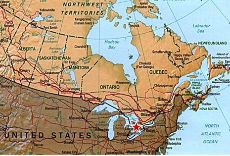
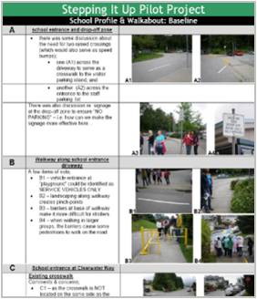
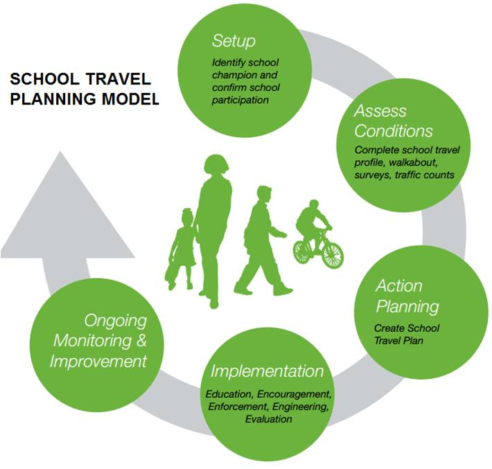
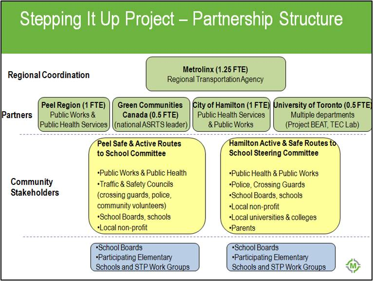
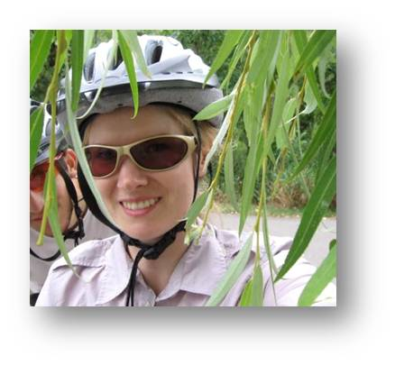

Tools Used
- Building Motivation Over Time
- Feedback
- Norm Appeals
- Obtaining a Commitment
- Overcoming Specific Barriers
- School Programs that Involve the Family
Initiated By
- Metrolinx
Partners
- Transport Canada
- University of Toronto
- Green Communities Canada
- Region of Peel
- City of Hamilton
- Local school boards
- Numerous community supporters
Results
- Average decrease of school car trips by 7% in morning peak hour; 3% decrease in afternoon peak
- 101,635 vehicle kilometres and 22 tonnes of greenhouse gas emissions avoided
- Estimated 750,000 additional minutes of physical activity among students at the schools each year
Case Study PDF
Webinar Transcript
Stepping It Up Videos
Landmark Case Study
Stepping It Up
Stepping It Up, led by the regional transportation authority Metrolinx, illustrates a coordinated, highly replicable, and institutionalized approach for reducing car traffic and increase walking and cycling to school. The program worked with 30 elementary schools in the City of Hamilton and Region of Peel, Ontario. Stepping It Up was designated a Landmark (best practice) case study in 2012.
Background
Note: To minimize site maintenance costs, all Tools of Change case studies are written in the past tense.
Stepping It Up used two existing travel models to promote active and sustainable modes of school travel for students, families and staff: 1) the Canadian School Travel Planning (STP) model, created by Green Communities Canada (www.saferoutestoschool.ca), and 2) the Smart Commute model (www.smartcommute.ca), an employer-based program of Metrolinx.
These models helped program organizers to:
1) Identify and assess the transportation-related conditions and issues at elementary schools through baseline data collection;
2) Work with the school and community to create a school travel plan with actions aimed at reducing car traffic around schools and creating safer, healthier conditions for students, staff and families to walk, cycle and use other active and sustainable modes of transportation;
3) Implement actions in the short, medium and long term in collaboration with the school population, school board and community partners. Actions and measures undertaken by schools and community partners draw from among the ‘Five Es’: engineering, education, enforcement, encouragement and evaluation, depending on the unique needs of each school; and
4) Monitor behaviour change after implementation of actions, and adjust school travel plan/actions as necessary.
Using this approach, municipal School Travel Facilitators worked with 30 public and Catholic elementary schools in urban and suburban settings in the City of Hamilton and Region of Peel, Ontario.
Students, parents, staff and community partners worked together to implement solutions to their transportation-related challenges, and to sustain and build upon those efforts year over year.

Map courtesy of mapcruzin.com
Setting Objectives
Stepping It Up aimed to shift the school population’s behaviour from driving to and from school to walking, cycling, and other more sustainable modes of transportation.
"Our goal was to work with 30 schools by the end of the project," explained Jennifer Lay, Program Advisor for School Travel, Metrolinx.
The overall target was to decrease the footprint of travel by car transporting students to and from school by 5% and decrease the footprint of travel from school staff driving alone to and from work by 3%.
"By shifting mode share away from car trips, we were also aiming to increase physical activity levels," said Lay. "We wanted to help obtain a minimum of 20 minutes per day of physical activity for students, which is mandated by the Ontario government through more walking or cycling to school.
"We also wanted to create awareness of existing programs and supports to help make a change in school travel habits, improve positive perceptions of active transportation, and build a greater sense of community and safety by putting more eyes on the street."
Stepping It Up's goals and initiatives aligned with the Ministry of Education’s Healthy Schools model, and the Ontario's EcoSchools program.
Getting Informed
The Stepping It Up approach combined and built upon pre-existing school-based and workplace-based transportation demand management models and toolkits to engage the entire school population. The audience therefore included students and their families, and school staff.
To understand each audience, program organizers undertook a number of surveys that asked about behaviours and attitudes towards transportation. They included:
- A paper-based, take-home family travel survey for students' parents/caregivers
- A paper-based student travel survey, which was completed in class
- An online staff travel survey, and
- An online school administrator survey.
A community walkabout was also conducted at each school and involved parents, school staff, police, municipal health and traffic safety staff, and other community members.

The walkabouts gave program organizers a better understanding of the unique issues and needs of each school from the perspective of the key stakeholders.
From this information, program organizers found that the four main concerns/barriers to the desired behaviours, as reported by parents and staff, were:
- Convenience. Parents and staff perceived that driving is more convenient than walking, cycling or other modes
- Time. Parents and staff perceived driving to be faster than other modes
- Distance. Parents and staff perceived the distance to be too great to use modes other than driving
- Safety. Parents perceived walking to be unsafe due to concerns such as strangers or bullies approaching children, and speeding cars around schools. Also, parents were concerned about having their child walk alone without adult accompaniment.
Delivering the Program
Stepping It Up operated from April 2009 to December 2011. In each of the program's three years, 10 schools were added to make up the program's goal of involving 30 elementary schools in the program.
The project's strategy and tactics included:
- Securing municipal staff time to lead and facilitate the project in each area (i.e. 1 FTE), and involvement from staff in public health, public works, traffic, police, risk management and communications.
- Ensuring that the work was overseen by a municipal Active and Safe Routes to School Committee in each area. These committees included municipal staff, school board staff, community groups, parents, students, local politicians and others.
- Approaching and securing formal approval by participating school boards, which was accomplished through school board research and ethics processes. (Obtaining a Commitment)
- Selecting and recruiting schools based on specific criteria. Schools were selected based on not being involved in other similar programming.
- Establishing school project committees. This was often piggy-backed on an existing related committee and included the principal, parents, teachers, and students.
- Sending project communications to schools through various media channels (Feedback)
- Collecting baseline data through surveys, walkabouts, school profiles, and traffic counts)
- Developing a School Travel Plan in collaboration with the school project committee, and implementing actions within it over the short, medium and long term.
- Conducting follow up measurements after one year and two years of implementation using surveys and traffic counts.
In each school's school travel plan (STP), individual actions were chosen by the school and tailored to its needs, following the "Five Es.".
Many of these actions were chosen to overcome the identified concerns and barriers of parents and staff. (Overcoming Specific Barriers.)
Examples of some these measures included:
- Encouragement: Walking Wednesdays, Walking Reward Programs, Walking School Buses, Road Watch programs, International Walk to School Day, Winter Walk Day, Bike repair workshops, contests, letter writing to local politicians, online ride-matching for staff. (Building Motivation Over Time)

- Engineering: addition and/or relocation of bike racks, crosswalk markings, stairs replaced with ramp, speed monitor displays, walking route signage, speed limit signage, closing of unsafe areas, sidewalk maintenance. (Prompts)
- Education: Links to physical activity, traffic-pedestrian-driver safety, cycling education, brochures, displays, banners, web pages, newsletters
- Enforcement: crossing guards, police (speeding, parking), parking lot safety enhancements
- Evaluation: The fifth "E," Evaluation, was completed as part of the program's measurement activities (see Measuring Achievements).
As an incentive to participate in the project, each school received an honorarium of $1,250 upon completion of their baseline data collection and another $1,250 upon completion of their follow-up data collection. (Financial Incentives)
"Schools weren't demanding honorariums, but it was a nice bonus, and many of them chose to spend it on their STPs," said Lay.
Partnerships
In addition to the partnerships with the municipalities, Green Communities Canada, and the individual schools involved, program organizers also established partnerships with McMaster University and the University of Toronto.
McMaster's geography department helped to map out the cycling and walking routes for schools in the City of Hamilton, while the University of Toronto helped to analyze and evaluate overall project data.

Financing the Program
Total project cost was $989,500, of which $405,000 was provided by a Transport Canada ecoMOBILITY grant. The bulk of the project budget was in-kind staff time, honoraria to schools, and funding to conduct data collection and analysis.
Lay said that, on average, each partner contributed one full-time equivalent staff position to the program, as well as other in-kind services.
"If the municipalities implemented signage, crossing guards, or sidewalk improvements, this was all in-kind and part of existing services or infrastructure that they would be offering anyway, so it was not charged back to the project or the school," she explained.
Stepping It Up had a data collection budget of about $2,000 per school for baseline data collection and $2,000 for follow-up data collection, although by the end of the program, the actual cost of each data collection phase was less, about $1,500.
Measuring Achievements
Through baseline and follow-up surveys, students, families, and staff were asked:
- How they usually travelled to and from school.
- The time in minutes and distance in kilometres of the trip to and from school.
- If their school travel behaviour changed following implementation of Stepping It Up.
- What the effects were of the project at their school.
For added confidence in the findings, the impact measurement approach used data triangulation. In addition to self-reported data from both student and family travel surveys, each school carried out traffic counts. In order to represent a normal school day, before and after implementation of measures, traffic counts were conducted on days when no significant events were occurring at the school.
"In some cases, students were involved in leading surveys in classrooms and counting morning traffic and they used that information to inform the school travel action plan," said Lay.
Baseline data was collected near the beginning of the school year (October/November), and follow-up data was collected toward the end of the school year (May/early June).
"This helped to minimize the differences from seasonal variations and ensured that there was time in between for implementation of actions from the school travel plan," said Lay.
Results
Stepping It Up measured an overall average decrease in school car trips of 7% in the morning period and 3% in the afternoon period.
"We measured equivalent increases in walking to and from school, which translated to nearly 750,000 additional minutes of physical activity among students at these schools each year," said Lay.
In addition, more than 100,000 vehicle kilometres travelled were avoided, with associated greenhouse gas emission and air pollution reductions of 22 tonnes and 884 kilograms, respectively.
"Parents said they saw an increase in the amount of physical activity their child was getting, an increase in the convenience and safety of walking to school, as well as an increase in awareness among drivers of children walking to school," said Lay.
When program organizers spoke with staff, many who had started carpooling during the project said that it saved them money, provided companionship during their commute, and gave them extra time for lesson planning.
By the end of the project, the 30 schools involved had collected their baseline data and 20 had collected their follow-up data. Of the 30 schools, 20 had created school travel plans by the end of the project.
"Our target was to have 30 actions from the school travel plans implemented, so at least one or two actions per school within the time frame," said Lay. In all, nearly 100 actions were implemented within the project's time frame.
The top six school actions were:
- Walking to school announcements and newsletters
- Dedicated weekly walk days and student reward programs
- Walking school bus
- Adding or relocating bike racks
- Hiring crossing guards and ensuring police enforcement
- Pedestrian, cycling and traffic safety education.
"The school travel plans also had additional actions that could not be carried out in the time period, but schools are continuing to work on these medium and long-term actions."
Contacts

Jennifer Lay
Program Advisor – School Travel, Metrolinx
Jennifer.lay@metrolinx.com
(416) 202-5951
Notes
LESSONS LEARNED
Don't reinvent the wheel
Metrolinx used the existing Canadian School Travel Planning model developed by Green Communities Canada as well as Metrolinx’s own Smart Commute model. "By incorporating the Smart Commute model, schools also had the opportunity to include actions that related to staff travel," says Lay, citing Metrolinx's online ride-matching database, the Carpool Zone, as a prime example.
Stakeholder engagement and commitment
Each community assembled a school travel planning stakeholder group, which included representatives from public health, municipal transportation, traffic planning, recreational and police, schools and school boards, student transportation services, counselors, local not-for-profits, parents, and students.
Additionally, each participating school assembled a small school travel planning team. "This group was either part of an existing school committee or a new group, and was supported and guided through the project at the school level," said Lay.
Lay also said that you need enthusiastic champions.
"Internal champions are needed at each school, school board, and in each community to lead and sustain the work and ensure that it's embedded into policy, planning, and programming."
Long-term sustainability
Lay said that incorporating school travel planning as a topic into the Healthy Schools and EcoSchools programs helped ensure that the work would be sustained.
"Make connections with existing programs and initiatives," she said. "Good links include environmental, health, or physical education curriculum because a program like Stepping It Up directly supports these areas."
She cautioned, however, that although Stepping It Up was effective, it's not enough to change the broader culture.
"A sustainable model calls for a provincially-led multi-sector committee that would champion the initiative, develop policies and monitor progress," she said. "As part of this there would be point people working within all municipalities, regions, and school boards to jointly share this mandate."
STP facilitator is an integral role
Having a dedicated person(s) coordinating and advancing school travel planning processes provided an essential link between the school, the stakeholder group, and the wider community.
In the Halton region, for example, the project manager for the Active and Safe Routes to School program was housed within the district School Board; in York region, the school travel facilitator was housed within the transportation services consortium which jointly manages transportation for two School Boards ; in the town of Ajax, the Active Living coordinator was housed within the recreation department; and in the Waterloo Region, the work was jointly managed by public health and transportation staff.
Empower kids to be ambassadors
Kelly Scott, who helped facilitate the Stepping It Up project in 16 Hamilton schools, said that the program's active transportation messages resonated with students. One Hamilton student, for example, said that, "I'm the one who's been bugging Mr. K for the last year and a half to get the school bike racks." Another student said that, “I encourage kids to walk to school 'cause its way more fun than driving, you get to hang out with your friends, get away from your parents and it wakes you up in the morning and helps you focus.”
"Those quotes demonstrate how kids can be ambassadors for this work," she said. "Kids can make things happen if they are empowered as leaders."
Many students helped to lead classroom surveys, took part in traffic counts, devised solutions and actions that could be included in the school travel plan, and challenged their fellow students, teachers, staff and parents to become involved.
INNOVATIONS
Innovation 1: The approach focused on engaging the full school population (student and their families, staff, administration) and community partners (from traffic engineers, to public health practitioners to policy-makers, to local bike co-ops) to implement the project and sustain it year over year; hence the approach is meant to address barriers by bringing together all stakeholders and utilizing their skills, expertise and decision-making powers to support desired behaviour changes over the short and longer term. From this, program managers can learn how to break down silos and create the necessary connections to ensure a successful, sustainable program.
Innovation 2: By gathering information from the perspective of users (i.e. students, parents and staff) with regards to different types of trips (i.e. school, work, extra-curricular activities) this approach helps program managers to make connections between different destinations that different users need to reach throughout their day and the relationships involved (e.g. parent to child) and begin to think about transportation in a mobility management context rather than a single trip or single user context (e.g. if a parent could access a Walking School Bus for their child, they would be free to cycle to work perhaps or use public transit rather than drive alone; and if that child could access a walking buddy program following their extra-curricular activities in the evening, they may be able to travel independently in active ways rather than picked up by parents in vehicles).
Beyond the transportation behaviour change focus of the project, we discovered that this approach can be used to assist schools and the surrounding community to delve into deeper and broader issues such as crime, graffiti, neglected buildings, gangs, garbage in the environment, bullying and other interconnected community issues. Thus, the approach can kick-start discussions about revitalizing neighbourhoods. As noted above this model can also be used as a youth engagement tool to empower children and youth to be leaders in their community (e.g. through the application of the photovoice method noted above).
Landmark Designation
The program described in this case study was designated in 2012.
Designation as a Landmark (best practice) case study through our peer selection process recognizes programs and social marketing approaches considered to be among the most successful in the world. They are nominated through an open nomination process and by our peer-selection panels and Tools of Change staff, and then scored by the selection panels based on impact, innovation, replicability and adaptability.
The panel that designated this program consisted of:
- Mark Dessauer, Active Living by Design
- Jacky Kennedy, Green Communities Canada
- Ryan Lanyon, Metrolinx
- Nathalie Lapointe, Federation of Canadian Municipalities
- David Levinger from the Mobility Education Foundation
- Lorenzo Mele, Town of Markham
- Geoff Noxon, Noxon Associates
- Chuck Wilsker, U.S. Telework Coalition
- Phil Winters from CUTR and the University of South Florida
- JoAnn Woodhall, Translink
This case study was written in 2013 by Jay Kassirer and Sharon Boddy.
Search the Case Studies